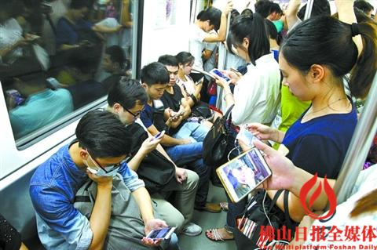

我想，是时候重新审视甚至抛弃Persona这样的实践了。Persona作为以人为中心的设计方法论中不可或缺的部分，长久以来被几乎所有设计机构或团队使用，包括我们自己也将其奉为圭臬。
在长期使用Persona的过程中，我们开始反思在当前设计环境下Persona作为设计方法论的必要性。Persona的定义和解释不再赘述，即尝试使用一个具象的用户画像来讨论用户的需求（内在与外在）、定义用户目标、规划体验地图、发现痛点和机会、最后进行设计。
Persona为何盛行
Persona开始盛行时，设计师所面临的环境是这样的：
- 更多的企业内部系统、或应用型系统的设计，系统的存在往往是解决某个真实发生的业务问题；
- 大多数人的思维依然停留在功能，决策者们、甚至设计师对于「以人为中心」缺乏理解和教育。
- 功能与上下文是独立的，大多数设计讨论不需要讨论上下文；
- 使用者是固定的，用户需求通常由工作岗位决定，设计者所接触的往往就是有直接任务、直接痛点的使用者；
Persona作为一种方法论恰好解决了这些问题：
- 通过同理心地图（Empathy Map）的方式教育决策者和设计师将设计的中心从功能转向人；
- 通过用户画像梳理出外在和内在的需要并转化成用户任务（User Tasks）进行优先级排序以精简设计范围；
- 连接后续的用户体验地图设计（User Journey Map）将设计串连，而不是功能的堆砌。
时代的变迁
在功能时代过度到「以人为中心」的设计时代，Persona起到不可比拟的作用，但是，我们的时代已经不同，相较于上一个时代我们发现：
- 大量设计需求来自于终端消费者的使用场景；
- 越来越多的人认识到体验和人的重要性；
- 在移动设计的背景下功能和上下文强相关；
- 使用者的痛点并不明显，也不存在必要的用户任务、用户旅程多样；
- 人们在拒绝标签化，在不同场景下人们可能表现出不同标签化行为。
总的来说，前一个时代，人的要素要高于相对特定的上下文——需求更来自于人的不同；而在现在这一时代，上下文则高于人的要素——需求来自于上下文的不同。
最简单的例子，当所有人挤进地铁之后，在同样一个上下文中，用户的使用习惯趋同，而讨论每个人用户画像则变得意义不大。

此外还需要考虑当前移动体验的日趋成、价格日趋降低、和学习成本降低的背景下，一个60岁母亲在子女的教育下、使用最新款的智能手机，其使用习惯不见得比她的子女有多少不同。
被设计思维滥用
Persona的确是设计思维中一项重要的活动，同时也是最不需要参与者任何的洞察力与系统思考的能力，它几乎是零基础的。这往往就成为参与者们最喜欢做的一项实践，在头脑风暴中，无论背景和专业的人都参与到绘制过程中。
然而，设计思维所坚持的是心手合一，通过建造、思考、改进的过程设计真正直达人心的体验，而不是娱乐化的自我满足，以为满墙的纸片就是设计、以为热火朝天的场面就是协作。
自我陶醉的Persona
同样不能忽视Persona在设计过程中「夸大其词」的倾向，打开绝大多数设计咨询公司的设计文档，在Persona部分，我们往往看到的是一张姣好的面容，一份超过当地收入平均水平的普通工作，一份「爱旅行」、「爱美食」、「爱音乐」的组合，且不说这样的形象对于产品本身的用户使用习惯有何特别之处，是否真实存在这样一个形象，更让人存疑。

被美化的Persona变成了设计者的自我陶醉，或是「收买」决策者的幻药——用一个假设的、皆大欢喜的角色让决策者对其产品设计充满信心。
2011年的博文《什么是Persona》中提到，Persona的目的是为了「Emapthy」，既将自己带入到使用者的情景中。那么，一份脱离真实世界的用户画像，无非是建设了一个「自己和大家都愿意相信」的情景。
写在最后
此三点便是Persona作为一种实践应该被重新思考的原因：
- 新的时代中，相同上下文中不同人的行为趋同——你是否和你的父母在自家客厅三个人各自刷手机？Persona的意义被消减；
- Persona的实践难度低，人人都可以参与，Persona在设计思维的名义下被形式化，并不对后续阶段产生多少真正的设计价值；
- Persona如果大部分时间都是拍脑袋的自我陶醉，用户画像只是你所希望目标用户形象，事实上他们要么不是真正用户、要么根本不存在。
Persona是过程而不是结果，真正目的是让设计师理解目标用户所处的情景，而真正理解情景，在以往，通过对目标用户的任务分析（往往可以从Persona中推导）就可以实现，而现在，理解情景必须走入到真正的世界中，而不是用理想化的用户画像让人「倾向于相信」，这样的Persona，还不如不做。